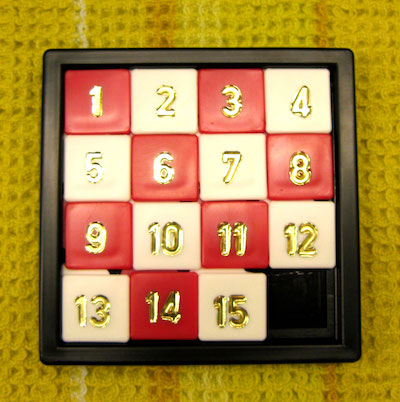
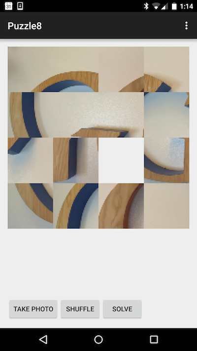

Start by reviewing the queue and heap data structures. Then bring the two together with some readings on priority queues. The University of Auckland also has some interesting content for further reading.
This content is not simple so take some time to read it carefully and understand it as you will be expected to implement a heap-based priority queue during the workshop.
In addition, do a bit more reading about Intents in Android as we will be using them in the workshop activity. Also, make sure you are running the latest version of Android Studio.
This game goes by many names: some call it puzzle-8 or 8-puzzle or 15-puzzle. The idea is to slide tiles around to form an image or to recreate a numerical sequence.
Here is a physical example of this classic game:

If you have not seen this game before, each tile can slide either horizontally or vertically into the empty space in order to reorder the tiles. You can read more about the game on Wikipedia.
For our version of this game, we will not be using numbered tiles but a photo taken by the user with the phone's camera
his is what the UI will look like with an image of a part of Google's (old) logo:

The starter code for this activity is composed of four classes:
PuzzleActivity which is the lone activity for this program:
onCreate: in addition to the boilerplate, the given implementation programmatically adds the PuzzleBoardView object to the UI.onCreateOptionsMenu, onOptionsItemSelected: just boilerplatedispatchTakePictureIntent: handler for the Take Photo buttononActivityResult: handler for the system call when the photo taking is complete.shuffleImage and solve: trivial handlers for the other two buttonsPuzzleBoardView, a custom View responsible for drawing the puzzle on screen
PuzzleBoardView: Constructor. Given implementation is complete.initialize: to add a picture to the view.onDraw: called by the system when the view should be redrawn. Note the code that will animate the solution once you implement the solver.shuffle: the actual handler for the "Shuffle" button. You will need to implement this.onTouchEvent: code that handles user clickssolve: where your solver code will goPuzzleBoard which represent the state of the puzzle. This class is separate from PuzzleBoardView because there will always be only one PuzzleBoardView but we will deal with multiple PuzzleBoard objects when we implement the shuffle and solve functionality
NEIGHBOUR_COORDS: a constant array storing the relative coords of all the neighbors of one tile. This will make possible to check neighbors with a for-loop rather than 4 if-statements.PuzzleBoard: Constructor. This should handle breaking up the given image into tile-sized chunks.PuzzleBoard: Copy constructor. This constructor creates a puzzle board that copies the state of another puzzle board. This will be handy when implementing neighbors below.reset: Part of the solver functionalityequals: Tests whether two boards are equal by checking whether their tile configuration is the same.draw: Called by PuzzleBoardView's onDraw. Makes each tile draw itself.click: Called by PuzzleBoardView's onTouchEvent. Determines which tile was clicked and attempts to move it.tryMoving: helper for click.resolved: Checks whether the current board is solved. This is the reason why we store indexes in each tile.XYtoIndex: helper method to convert between two-dimensional coordinates and positions in the ArrayList.swapTiles: private helper. Does what it says.neighbours: will create a list of all board configurations that can be reached by moving a single tile in the current board.priority: computes the priority of the current board. This will be explained as part of the instructions for the solver.PuzzleTile which represents a single tile. This is fully implemented for you.
PuzzleTile: Simple constructor that stores the given index and bitmap.getNumber: Getter for the tile index.draw: Draws the bitmap on the given canvas at the given location.isClicked: Determines whether the touch location falls within the tile.To implement the picture-taking functionality, start in dispatchTakePictureIntent method (that is the handler for the "Take photo" button) to create a new intent using MediaStore.ACTION_IMAGE_CAPTURE and start that intent.
To test the picture-taking functionality, update onActivityResult to display the thumbnail of the captured image in an ImageView in the UI (hint: the thumbnail can be found in the intent that onActivityResult is called with. Look at getExtras, and "data" within the extras). At this point you should be able to run your app and verify that you are able to take a picture and display it in the UI.
The following codesnippets should help you.
@Override
protected void onActivityResult(int requestCode, int resultCode, Intent data) {
if (requestCode == REQUEST_IMAGE_CAPTURE && resultCode == RESULT_OK) {
Bundle extras = data.getExtras();
Bitmap imageBitmap = (Bitmap) extras.get("data");
//TODO: Display thumbnail in image.
}
}
public void dispatchTakePictureIntent(View view) {
Intent takePictureIntent = new Intent(MediaStore.ACTION_IMAGE_CAPTURE);
if (takePictureIntent.resolveActivity(getPackageManager()) != null) {
startActivityForResult(takePictureIntent, REQUEST_IMAGE_CAPTURE);
}
}
So far we have laid the groundwork for Puzzle-8 so you should be able to proceed with the more complicated parts of the game:
The three classes that implement the game functionality are:
PuzzleBoardView inherits from View and is responsible for drawing of a puzzle board in the UI. It also handles the shuffling (and later the solving) of the puzzlePuzzleBoard represents the current state of the puzzle boardPuzzleTile is responsible for drawing and manipulating a single tileThe PuzzleTile implementation is provided so take a moment to read through it.
You can now delete the ImageView that you used to test the picture-taking functionality. Instead, we will display the photo in a PuzzleBoardView. But because PuzzleBoardView is a custom-type, it is added to the UI programmatically rather than using the UI editor. The code to do this is provided in the PuzzleActivity.onCreate method.
Next, implement the constructor for PuzzleBoard. It should take the passed-in Bitmap object and divide it intoNUM_TILESxNUM_TILES equal-sized pieces. (Hint: You can use theBitmap.createBitmap and Bitmap.createScaledBitmap methods to do so.) Then use each "chunk" of the bitmap to initialize a tile object. Remember to leave the last tile ;null to represent the 'empty' tile!
You should then display these tiles on the board (removing the ImageView you may have used to test the picture-taking functionality).
Try running your app and make sure that the photo you take is chopped up into appropriately-sized tiles and that the unshuffled puzzle is properly rendered on the screen. Because the tap functionality is provided, you should also be able to manually shuffle the board.
The constructor for PuzzleBoard could be implemented like so:
Next, we will implement the shuffle functionality. One option would be to implement shuffling by randomly swapping tiles, but that could lead to a puzzle that cannot be solved. In order to avoid this, we will instead make a number of random moves starting with the solved puzzle to create the shuffled puzzle. Implement PuzzleBoard.neighbours which is a method that returns an ArrayList of all the PuzzleBoard configurations that are possible by moving one tile in the current PuzzleBoard. Note that depending on where the empty square is, there could be 2, 3 or 4 possible moves. So implement the neighbours method to:
NEIGHBOUR_COORDS array)The implementation of PuzzleBoardView.shuffle is then a matter of repeatedly updating PuzzleBoardView.puzzleBoard to a randomly selected value fromPuzzleBoardView.puzzleBoard.neighbours(). Don't forget to call invalidate() at the end of the shuffle method in order to update the UI.
You can now test your app by taking a picture, shuffling it and manually trying to solve the puzzle. If you enjoy a challenge, try updating NUM_TILES to 4 and manually solving the puzzle. Note that you can also vary the difficulty of the puzzle with the content of the picture that you take.
The shuffle method could be written like this:`
It is fun to play puzzle-8 for a while but wouldn't it be nice to let the computer solve it for you when you get stuck? You will implement a solver that uses a best-first search algorithm to find the quickest solution to the current puzzle. You will do so by implementing the A* search algorithm, an algorithm from AI that is widely used in pathfinding and graph traversal.
We have already defined PuzzleBoard to represent a state of the board (e.g. the current state or the states generated by moving a single tile). You will add to this class two members:
steps representing the number of steps required to reach the given state. You should update PuzzleBoard's copy constructor to set steps to one more than the value passed in with otherBoard.PuzzleBoard object called previousBoard referring to the previous state of the board before reaching the current state. You should set previousBoard to otherBoard in the copy constructor.Our search algorithm then consists of maintaining a PriorityQueue (part of the Java library) of possible board states and considering the best state we have so far and adding all of its neighbours onto the PriorityQueue until we solve the puzzle. The success of this approach relies on the use of an appropriate priority function associated with each PuzzleBoard. We will use a Manhattan priority function which is the sum of the distances (sum of the vertical and horizontal distance) from the blocks to their goal positions, plus the number of moves made so far to get to the state.
For example with a starting configuration of:
8 1 3
4 2
7 6 5
And a desired target of:
1 2 3
4 5 6
7 8
We have the following Manhattan distances for each of the blocks, which is simply the number of steps from the blocks current position to its correct position.
1 | 2 | 3 | 4 | 5 | 6 | 7 | 8
-------------------------------
1 | 2 | 0 | 0 | 2 | 2 | 0 | 3
This results in a Manhattan priority of 10 (sum of the second row) + number of moves so far
Using this strategy works because to solve the puzzle from a given PuzzleBoard, the total number of moves we need to make (including those already made) is at least its priority.
Consequently, as soon as we dequeue a state, we have not only discovered a sequence of moves from the initial board to the board associated with the state, but one that makes the fewest number of moves.
So start by implementing the PuzzleBoard.priority method to return the Manhattan distance + steps. Then implement PuzzleBoardView.solve to:
PriorityQueue object (this will require you to createa custom PuzzleBoardComparator that compares the priority of two boards. Android Studio is helpful in creating the template for you)PuzzleBoard to the queue (0 moves, and a null previous state)Then while the queue is not empty:
PuzzleBoard with the lowest priorityPuzzleBoard is not the solution, insert onto the PriorityQueue all neighbouring states (reusing the neighbours method).ArrayList of all the PuzzleBoards leading to this solution (you will need to create a getter for PuzzleBoard.previousBoard). Then use Collections.reverse to turn it into an in-order sequence of all the steps to solving the puzzle. If you copy that ArrayList to PuzzleBoardView.animation, the given implementation of onDraw will animate the sequence of steps to solve the puzzleAfter implementing best-first search, you will notice one undesirable feature: states corresponding to the same board position are enqueued on the priority queue many times. To prevent unnecessary exploration of useless states, when considering the neighbours of a state, don't enqueue the neighbour if its board position is the same as the previous state.
These extensions offer a variety of different ways you might extend the basic Puzzle-8 functionality:
PriorityQueue object, with your own min-heap-based implementation of a priority queue. You only need to support a simple constructor and three methods (add, remove and isEmpty) and you can make your implementation PuzzleBoard-specific (it does not need to handle generic types).ACTION_IMAGE_CAPTURE intent, try using the full-definition image taken by the camera.